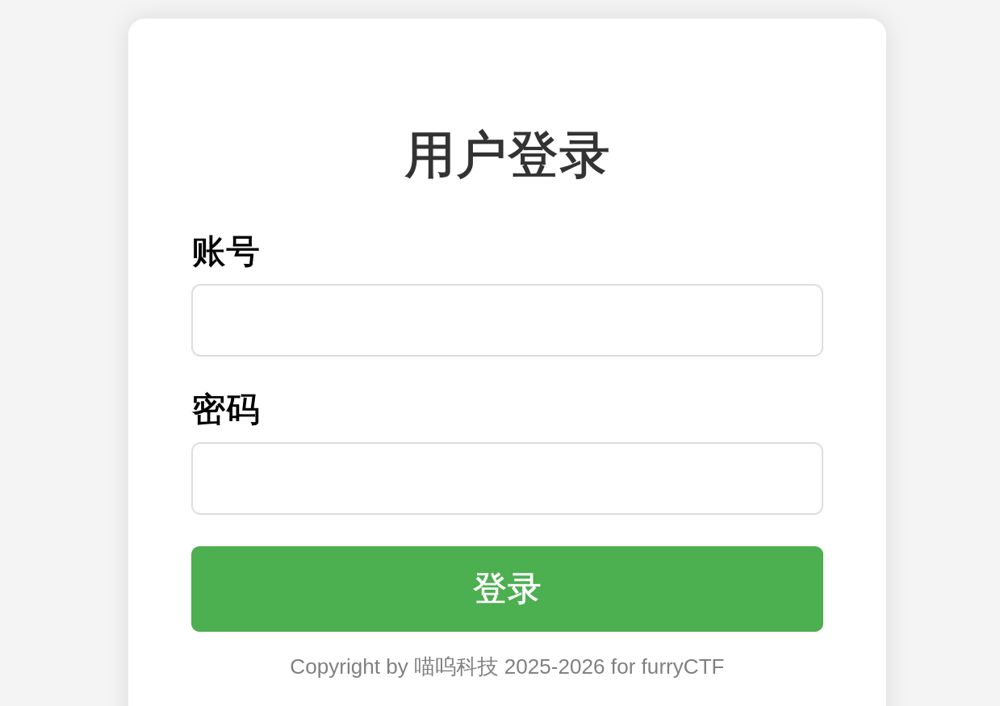
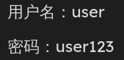
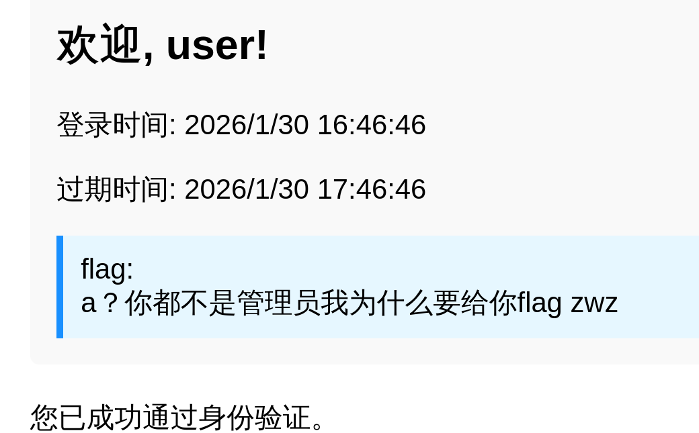
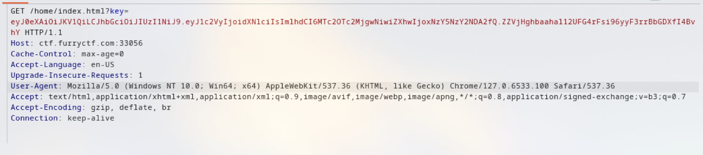
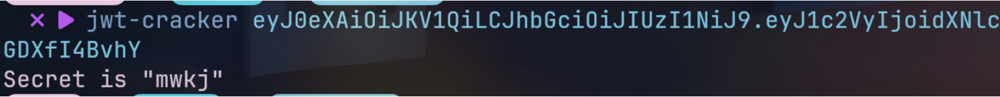
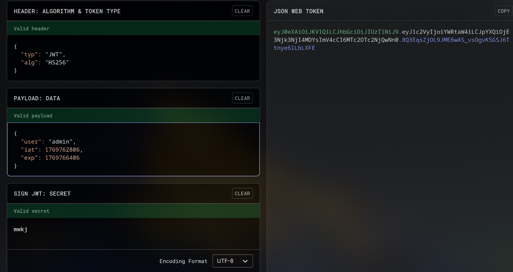
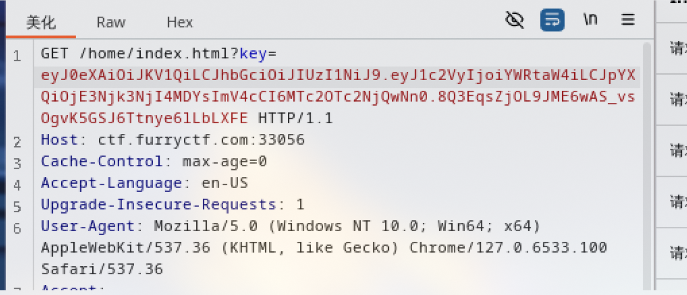
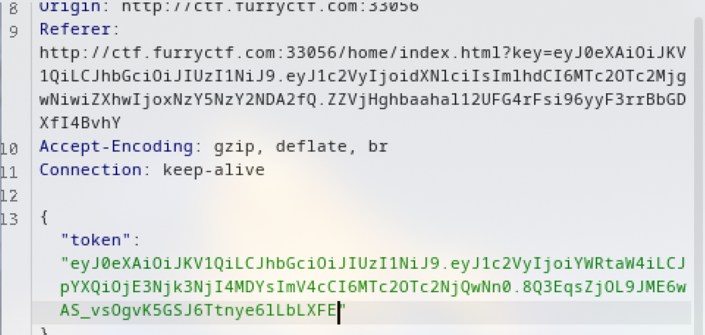
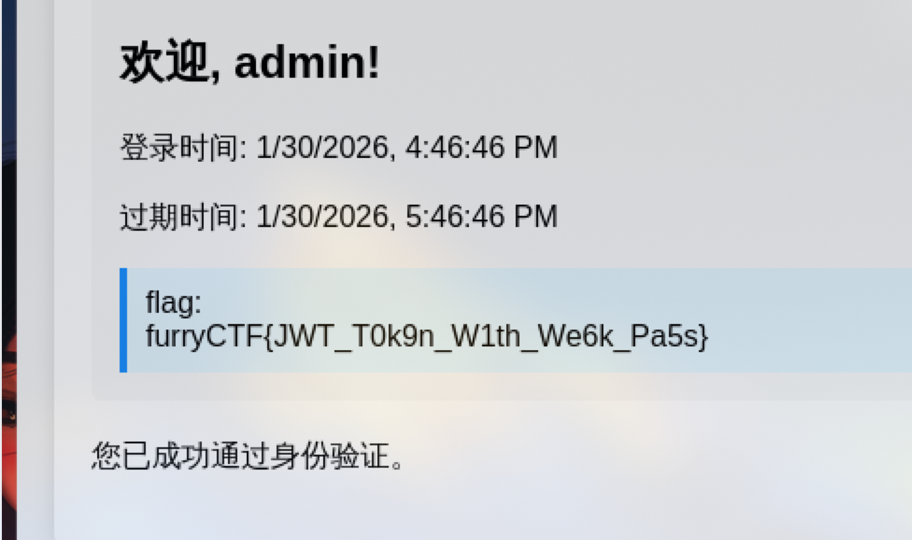

admin-cookie伪造


题目给了账号密码，直接登录

进来后要成为管理员

bp抓包，很明显一个key用于cookie伪造，直接用jwt-cracker爆破密钥
1 | |

进入网站www.jwt.io，把user改成admin伪造key

把伪造的key复制下来替换旧key

还要再发一个请求包，把token改成伪造的key

发送得到flag

本博客所有文章除特别声明外，均采用 CC BY-NC-SA 4.0 许可协议。转载请注明来源 Lengkur！
相关推荐

2026-01-20
固若金汤-热身题-session伪造-flask-ssti
题目提示扫目录 发现.git泄露，用rip-git把.git还原 1rip-git -u http://ctf.furryctf.com:33061/.git 审计app.py文件查看路由/login，可以看到，无论怎么登录都是不行的 12345678910111213141...
2026-01-20
DeepSleep-py2的input-双写绕过
从题目提示可以知道这的知识点是python2的input函数，在python2中input函数会把用户输入的字符看作命令执行 123raw_input()：将用户输入当作字符串处理（安全的）。input()：等价于 eval(raw_input()) 查看源码可以看到过滤了很多关键字，检测...
2026-01-16
AI_WAF
SourceURL:file:///home/hack/files-win/CTF/WP/三届长城杯/AI_WAF.docx AI_WAF 1.打开靶场一个搜索页面，在搜索框随便输入点东西，用bp抓包...
2026-01-16
web028-爆破-web目录爆破
本文档原始附件已同步到博客：/pdfs/web028-爆破-web目录爆破-4daf87be.pdf。 点此下载附件
2026-01-28
ezUpload Revenge!!-.htaccess侧信道(RewriteCond)
这题和上个upload题多了点字符过滤，后端也过滤了几个关键字，上题的.htaccess文件已经用不了了，找了个新的 123RewriteEngine OnRewriteCond expr "file('/flag') =~ /{pattern
...
2026-01-16
buy
本文档原始附件已同步到博客：/pdfs/buy-3f0e9979.pdf。 点此下载附件